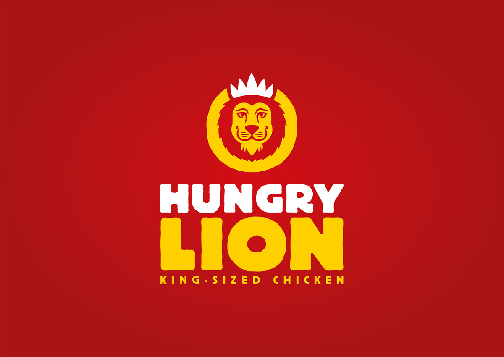

HUNGRY LION
WHO ARE WE ?
Hungry Lion was founded in 1997, it a South African restaurant chain specializing in fried chicken.Hungry Lion was subquently boight from the Shoprite Group in 2014.
The current C.E.O is Andrian Basson
Hungry Lion prides itself on sharing more with its customers by delivering tastey fried chicken with more flavour and more value.Operating in six African countries, with over 280 restaurants, the brand strives to provide high-quality products at affordable prices in a morden fast-food environment.
The African countries tha have Hungry Lion are: Angola , Botswana , Namibia , South Africa , Swaziland and Zambia
The Hungry Lion competitors may include the Original SoupMan, Hatch & Coop , and Ho Chicken.
OUR ITEMS & MENU: